Une lentille est un objet transparent, qui peut dévier la trajectoire des rayons lumineux par réfraction.
Si on observe un objet à travers une lentille, on le voit différemment (plus gros ou plus petit) selon la courbure des faces de la lentille.
Sauras-tu différencier une lentille convergente d'une lentille divergente ?
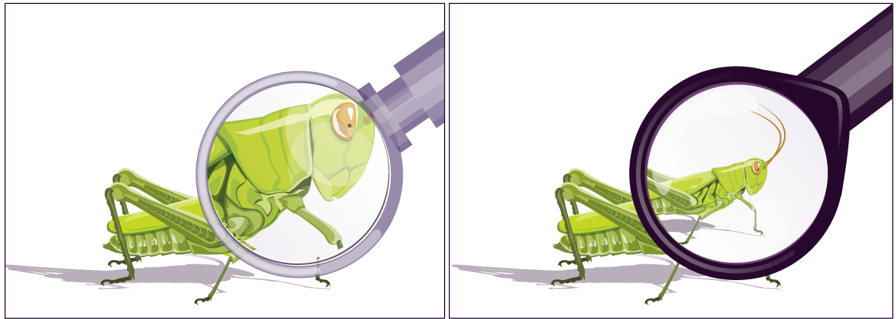D'après toi, quelle lentille permet de grossir cette image comme une loupe ?
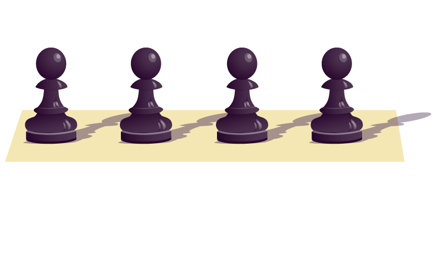
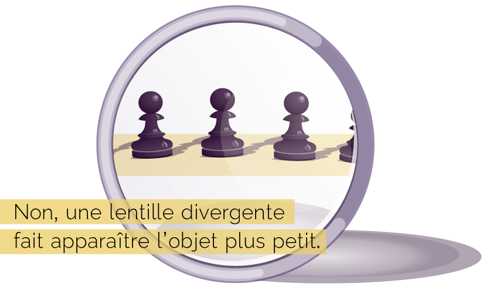
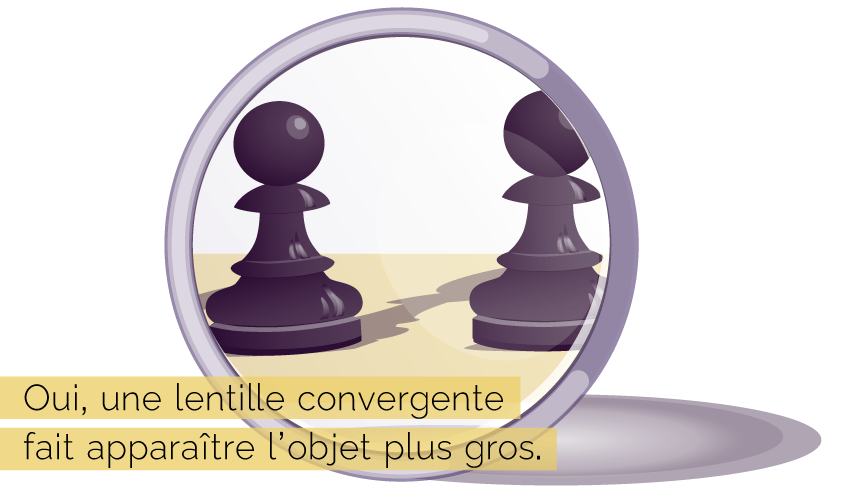
Donc pour voir l'objet en plus petit, il faut utiliser une lentille divergente.
Sais-tu laquelle de ces deux lentilles est divergente ?
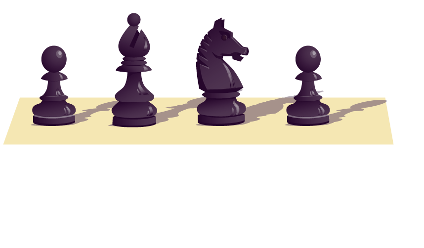
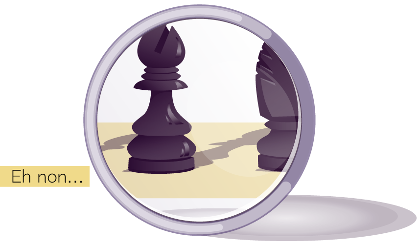
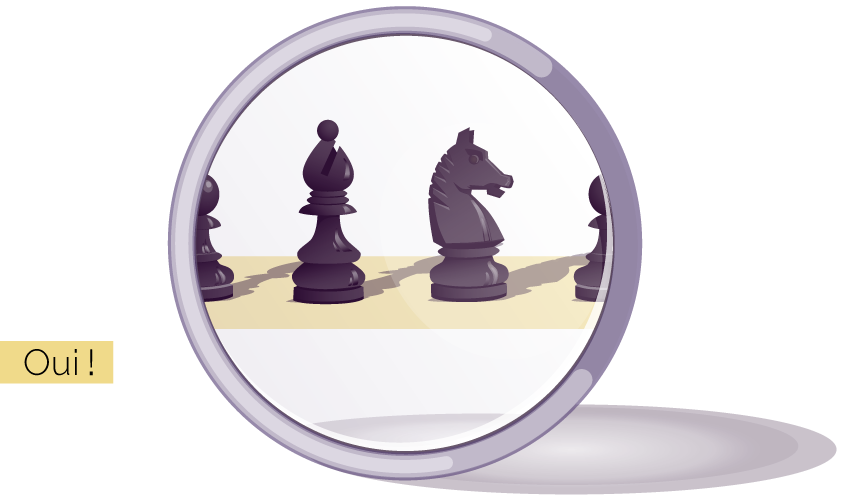
À quel schéma correspond l'action d'une lentille divergente ?
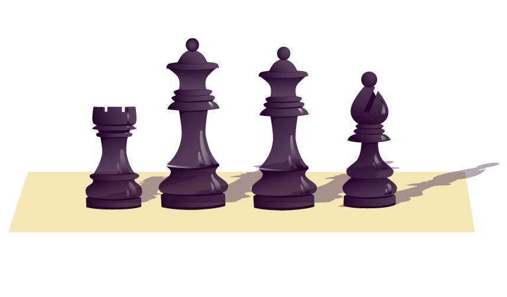
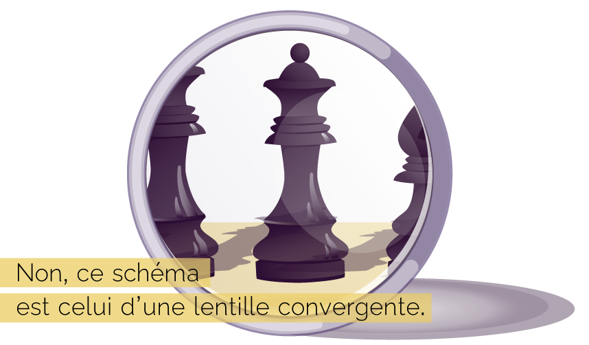
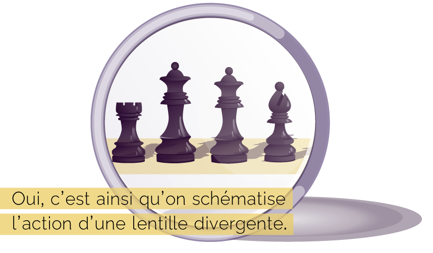
Pour résumer…
Lentille convergente
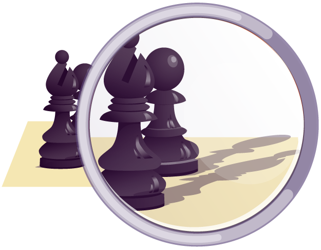
Lentille divergente
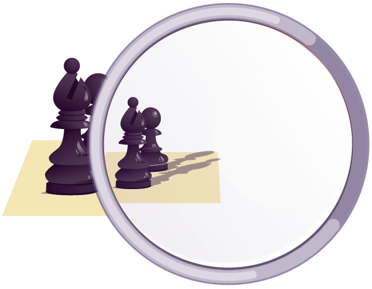